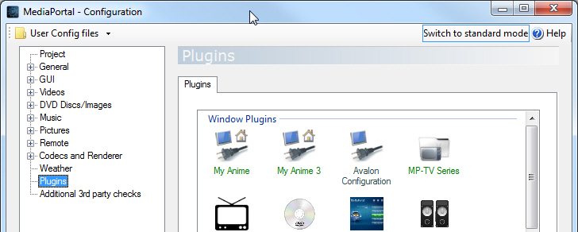
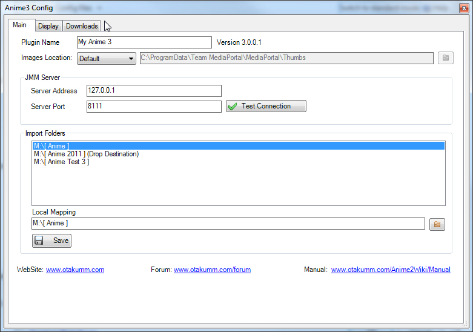

MyAnime3 Plugin Setup
Step 1 – Run MediaPortal configuration and go the plugins section

Step 2 – Optionally list MyAnime3 in the home screen

Step 3 – Right Click on MyAnime and select Configuration
Step 4 – Test that your connection to JMM Server is working